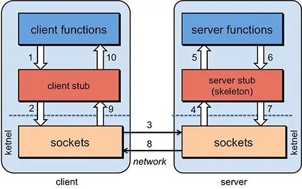
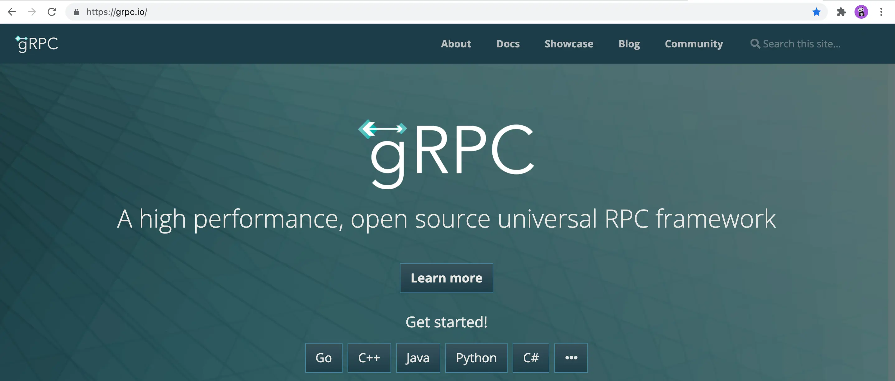
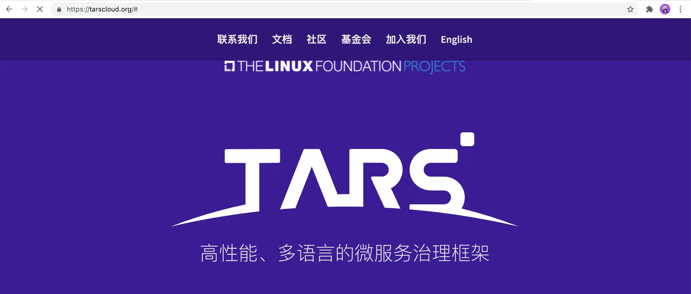
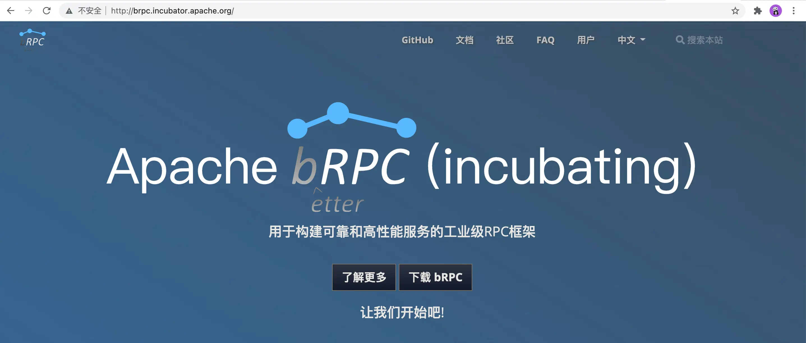
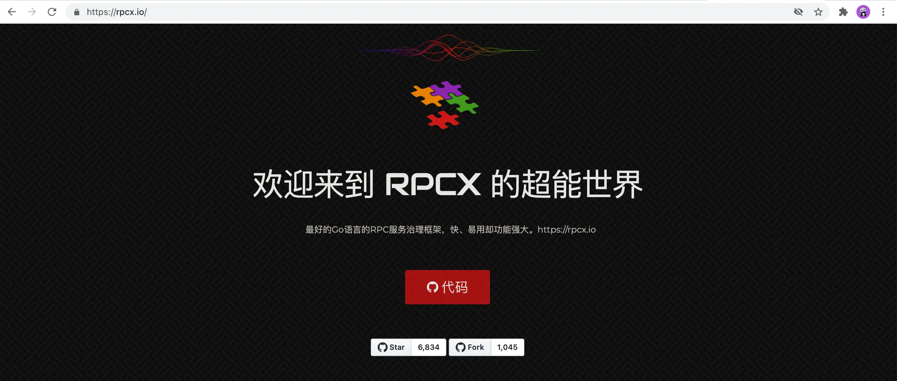

RPC
运行过程

sequenceDiagram
actor c as Client
actor cs as ClientSub
actor s as Server
actor ss as ServerSub
actor h as Handler
c->>cs: 函数调用
cs->>cs: json/protobuf等序列化
cs->>s: tcp/http等发送
s->>ss: 函数调用
ss->>ss: json/protobuf等反序列化
ss->>h: 功能实现
h-->>ss: 函数返回
ss-->>ss: json/protobuf等序列化
ss-->>s: 回包
s-->>cs: tcp/http等发送
cs-->>cs: json/protobuf等反序列化
cs-->>c: 函数返回
常见框架
-

-

-

-

-
grpcurl 类似curl,但用于grpc
RPC 更新（2024-2026）
RPC 生态变化：
- Connect-RPC：Buf 推出，兼容 gRPC 和 HTTP/JSON。
- Twirp：简单 RPC 协议，基于 HTTP/1.1。
- Cap'n Proto：零拷贝序列化，极低延迟。